Hardy Heron
Ubuntu 8.04 LTS trägt den Namen "Hardy Heron" (kühner Reiher) und wurde zwei Jahre nach Dapper Drake die nächste Version mit einem längeren Unterstützungszeitraum (Long Term Support). Sie erschien am 24. April 2008. Die Desktop-Variante wurde bis Mai 2011 unterstützt, während die Server Edition noch bis April 2013 mit ausgewählten Aktualisierungen versorgt wird.
| Ubuntu 8.04 LTS | |
| Basisdaten | |
| Codename: | Hardy Heron |
| Deutsche Übersetzung: | Kühner Reiher |
| Status: | nicht mehr unterstützt |
| Angekündigt am: | 29. August 2007  |
| Erschienen am: | 24. April 2008  |
| Unterstützt bis: | 12. Mai 2011 (Desktop) bzw. 09. Mai 2013 (Server) |
| « Zeitleiste » | « 7.10 ... 8.04 LTS ... 8.10 » |
Neuerungen¶
Die Entwickler informieren regelmäßig über die Neuerungen in den verschiedenen Versionen. Ausführliche Informationen findet man auf den Internetseiten von Ubuntu - dort stehen auch Links zu Images für den Download bereit:
Allgemein¶
Kernel 2.6.24¶
Ubuntu "Hardy Heron" 8.04 enthält den Linux-Kernel 2.6.24-12.17 (basierend auf Kernel 2.6.24.3). Dieser beinhaltet bedeutende Verbesserungen. So unterstützt er nun auch die amd64 Architektur Dynticks , so dass Stromsparmechanismen wirkungsvoll arbeiten können. Des weiteren wurde mit dem Completely Fair Scheduler ein komplett neuer Prozess-Scheduler integriert, der speziell auf Desktop-Systemen eine Verbesserung der Interaktivität von Prozessen bringen soll.
OpenOffice.org 2.4¶
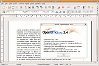
In Hardy ist nun OpenOffice.org 2.4 enthalten. Die Version 2.4 soll die letzte Version aus der Reihe 2.X sein. Das bedeutet, umwerfend neue Funktionen wurden bisher noch nicht implementiert. Als nächstes soll OpenOffice.org 3.0 erscheinen , erst dort sollen viele neue Funktionen eingebaut werden. Verbessert an OpenOffice 2.4 wurde in Calc die Formulareingabe und das Sortieren von Spalten im Datenpilot mittels Drag and Drop. Mit der Komponente Chart sind Diagramm-Beschriftungen besser positionierbar. In Impress können Hintergrundgrafiken nun per Kontextmenü eingebunden werden. Folientitel werden beim PDF-Export nun als Lesezeichen abgespeichert. Die Statusleiste in Writer zeigt die Sprachversion des Absatzes an. Blockmarkierungen in Textdokumenten sind ab sofort möglich. Die Sicherheitsfunktionen wurden um ein Master-Passwort für Internet-Verbindungen erweitert. Der Zugriff auf WebDAV Server über das HTTPS-Protokoll ist nun möglich. Der PDF-Export bietet nun PDF/A-1 (ISO 19005-1) zur Langzeitarchivierung. Beim automatischen Suchen von Updates wird auch geprüft, ob neue Versionen von installierten Erweiterungen vorliegen. Die Hilfefunktion wurde ebenfalls erweitert. (Aus der Wikipedia )
Firefox 3¶
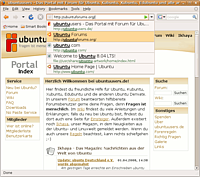
Firefox 3 wird bei Ubuntu Hardy Heron (außer bei Kubuntu,was den KDE-Browser Konqueror verwendet) als Browser von Haus aus installiert. Zum Termin der Freigabe von Hardy im April wird dies noch eine Beta-Version sein, da Firefox 3 offiziell erst im Juni erscheinen wird. Im Rahmen der üblichen Updates wird man dann nach der offiziellen Freigabe von Firefox 3 die stabile Version erhalten.
Die neue Version von Firefox bietet eine Reihe neuer Funktionen, die den Browser unter anderem auch deutlich besser an die Linux Welt anpassen. So benutzt Firefox 3 die Icons und das Thema der Desktopumgebung. Schaltflächen in Webseiten passen nun ebenso zum Thema der Desktopumgebung. Darüberhinaus wurden die Druckfunktionen, der Speicherverbrauch und die Performance deutlich verbessert . Wer auf Firefox 2 nicht verzichten möchte, kann den Browser nach wie vor aus den Paketquellen installieren.
Wubi¶
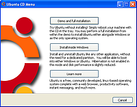
Das Installations-Programm für Ubuntu unter Microsoft Windows Wubi ist nun direkt auf der Ubuntu-CD enthalten. Mittels Wubi kann man Ubuntu so unter Windows installieren, wie man es von Anwendungsprogrammen gewohnt ist. Installiert wird über das Wubi-Programm und die Deinstallation verläuft wie gewohnt über die Systemsteuerung (unter Software). Desweiteren benötigt Wubi für die Installation von Ubuntu keine Partition, stattdessen wird auf einem beliebigen Windows-Laufwerk der Ordner wubi mit mehreren großen Dateien als virtuelle Festplatte angelegt. Der Start des Ubuntu-Systems erfolgt über einen Eintrag im Windows-Bootmanager (und nicht in GRUB). Das installierte Ubuntu unterscheidet sich von der normalen Ubuntu-Installation lediglich dadurch, dass das System ständig auf die Dateien der Windows-Partition und nicht auf eine eigene Linux-Partition zugreift, folglich könnte das System ein wenig langsamer bei Schreib- und Lesezugriffen sein. Letztendlich ist Wubi ein sehr guter Weg um Linux zu testen, ohne dass man Angst vor der Umpartitionierung des Systems haben muss.
Ubuntu¶
Pulseaudio¶
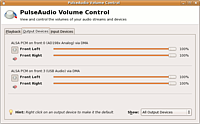
Hardy Heron integriert PulseAudio, einen erweiterten Soundserver. Der praktische Vorteil von PulseAudio gegenüber dem Standardsoundserver ist, dass Streams verschiedener Programme individuell über eine einfache GUI gesteuert werden können. Und zwar sowohl in ihrer Lautstärke und Balance als auch in der Auswahl des Ausgabemoduls (Netzwerk, Soundkarte(n), USB-Kopfhörer).
Das bedeutet, dass man sich beispielsweise mit einem Kopfhörer (Soundkarte1) ein Video angucken kann, während über Lautsprecher (Soundkarte2) Musik läuft. Die Kanäle kommen sich dabei nicht in die Quere und können lückenlos umgeschaltet werden. Nebenbei kann ein weiterer Stream über das Netzwerk oder an einen kabellosen USB Kopfhörer gesendet werden. Der Fantasie sind keine Grenzen gesetzt.
GFVS¶
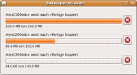
Das GFVS ersetzt das in die Jahre gekommene GnomeVFS. Beides sind Konstrukte, die man als Anwender selten bemerkt. Das GnomeVFS ist/war ein virtuelles Dateisystem. Über dieses konnten beispielsweise Netzwerkfreigaben geöffnet werden, ohne dass diese richtig gemountet werden mussten. Das GVFS ersetzt nun das GnomeVFS komplett.
Kopiert man nun mehrere Dateien, so werden sämtliche Transfers zu einem Fenster zusammengefasst, wobei einzelne Kopiervorgänge abgebrochen werden können; dazu wird die Geschwindigkeit, mit der Dateien kopiert werden, angezeigt.
Metacity¶
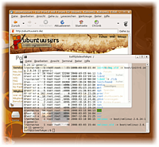
Der Fenstermanager von GNOME Metacity besitzt nun einen integrierten Composite-Manager . Dies bedeutet dass man Desktop-Effekte wie transparente Fenster und Panels usw. nun auch ohne Compiz haben kann.
Dabei muss man betonen, dass die Composite-Fähigkeiten von Metacity nicht an die von Compiz heranreichen. Dies ist auch nicht gewollt. Metacity soll in erster Linie ein Fenstermanager sein und kein Effekt-Generator. So beschränken sich die Fähigkeiten von Metacity primär darauf anderen Programmen Alpha-Blending zur ermöglichen.
So kann nun das GNOME Terminal echte Transparenz benutzen, beim Ändern der Lautstärke des Systems wird eine nette Grafik anstatt eines simplen Fensters angezeigt oder beim Wechseln zwischen Fenstern mittels Alt + Tab ⇆ werden Vorschaubilder eingeblendet usw. Wackelnde Fenster und 3D-Würfel mit den Arbeitsflächen gibt es bei Metacity nicht.
Da ein Composite-Manager auf die 3D-Fähigkeiten der eingebauten Grafikkarte angewiesen ist, ist diese Funktion nicht von Haus aus aktiviert. Man muss sicherstellen, dass ein passender Grafiktreiber installiert ist, danach kann man über den Befehl
gconftool-2 -s --type bool /apps/metacity/general/compositing_manager true
den Composite-Manager von Metacity aktivieren.
PolicyKit¶
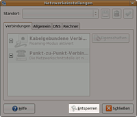
Über PolicyKit können Anwendungen mit Benutzerrechten gestartet und später mit root-Rechten versehen werden. PolicyKit wurde bereits in die Werkzeuge zur Systemverwaltung von GNOME integriert. Mittels PolicyKit lassen sich des weiteren Rechte fein verteilen, so ist es möglich Benutzer zu bestimmen, denen bestimmte Aktionen erlaubt werden, für die normalerweise Root-Rechte von Nöten wären ohne sie selber zu Administratoren zu machen.
So wäre es beispielsweise möglich einem Benutzer zu erlauben die Netzwerkeinstellungen oder die Uhrzeit des Systems zu verändern, ohne ihn in die "admin"-Gruppe aufnehmen zu müssen. Sobald PolicyKit einmal in den Dateimanager Nautilus oder in den Texteditor gedit von GNOME eingebaut sein wird, kann man beispielsweise Dateien in Verzeichnisse verschieben oder editieren, ohne dass das Programm mit Root-Rechten gestartet sein muss. Sind höhere Rechte für eine Operation nötig, erscheint eine Abfrage, über die man die Operation authorisieren kann. Noch ist das jedoch leider nicht eingebaut.
GNOME System Monitor¶
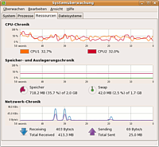
Die Systemüberwachung von GNOME wurde etwas modernisiert. Der überarbeitete "Ressourcen"-Tab rendert die Graphen nun mittels Cairo, einer 2D-Grafikbibliothek. Dadurch aktualisieren sich die Graphen nun deutlich schneller und hübscher, ebenso wurden die Widgets zur Darstellung der Auslastung usw. geändert. Leider steigt dadurch die CPU-Auslastung, weswegen man sich nicht über ein paar Prozent Auslastung wundern sollte, obwohl doch "nichts" läuft.
Letzenendes sind all diese Änderung jedoch nur kosmetischer Natur. Andere Anwendungen können jedoch nun ebenso diese GTK Widgets benutzen. So dürfte diese Art der Darstellung früher oder später in andere GNOME Anwendungen übernommen werden.
Weltzeituhr¶
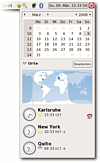
Die Uhr im GNOME Panel wurde überarbeitet und zeigt nun von Haus aus eine kleine Weltkarte an, in der die Uhrzeiten verschieden Städte eingeblendet werden können. Dazu werden Wetterinformationen zu den einzelnen Städten aus dem Internet geladen und angezeigt.
Klickt man neben der Stadt auf "Einstellen", so wird die Systemuhr nach der Zeitzone der ausgewählten Stadt eingestellt. Die aktuelle Zeitzone symbolisiert das Haussymbol neben einer Stadt. Diese Funktion ist für Reisende sicherlich recht praktisch.
Brasero¶
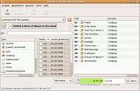
Brasero ist eine bewährte Anwendung um CDs und DVDs zu erstellen. Das Programm wurde offiziell in GNOME 2.22 als Standardanwendung zum Brennen von CDs/DVDs aufgenommen, nachdem es lange Jahre kein "offizielles" Brennprogramm der GNOME Desktopumgebung gab. Brasero wird nun bei der Installation von Ubuntu automatisch installiert.
Brasero bietet alle Funktionen, die ein Brennprogramm leisten muss. Mit Brasero können CD/DVDs on-the-fly gebrannt werden, CD-Images geschrieben und erzeugt werden, CD-Text bei Audio-CDs geschrieben werden und vieles mehr.
Transmission¶
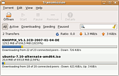
Transmission ist ein BitTorrent-Client. Seit Ubuntu "Gutsy Gibbon" ist das Programm aus den Paketquellen von Ubuntu installierbar. Mit GNOME 2.22 wurde Transmission nun offiziell in das GNOME Projekt aufgenommen. Bei der Installation von Ubuntu "Hardy Heron" 8.04 wird das Programm nun von Haus aus installiert.
Das Programm bietet viele praktische Funktionen wie automatisches Port-Mapping (mittels UPnP/NAT-PMP), schnelle Wiederaufnahme von Transfers, Transfer-Beschränkungen und Priorisierung, Erstellung von Torrent-Dateien usw.
Vinagre¶
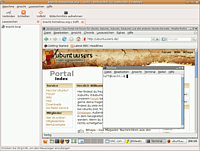
Vinagre ist ein VNC-Client. Das Programm bietet eine einfache Oberfläche, über die sich mehrere Rechner per VNC einfach und schnell bedienen lassen. Das Programm integriert sich stark in die GNOME Desktopumgebung. So werden Logindaten beispielsweise im GNOME Schlüsselbund gespeichert. Das Programm ist recht neu, befindet sich zum ersten Mal in den Paketquellen von Ubuntu und wird nun auch bei der Installation von Ubuntu von Haus aus installiert.
Sonstiges¶
gThumb wird nicht mehr automatisch installiert.
myspell wurde durch Hunspell ersetzt und soll so eine bessere Rechtschreibkorrektur ermöglichen.
Kubuntu¶
Kubuntu 8.04 ist im Gegensatz zu Ubuntu und Xubuntu keine LTS-Version und wurde daher nur 18 Monate bzw. bis Oktober 2009 offiziell unterstützt.
KDE 4¶
Hardy Heron ist das erste Kubuntu Release mit KDE 3 und KDE 4 - KDE 4.0.3 wird zusätzlich zu KDE 3.5.9 angeboten. Es ist somit möglich, KDE 3 und KDE 4 parallel zu installieren. Daneben existiert mit Kubuntu 8.04 Hardy Heron KDE4 Remix eine eigene Installations-CDs nur mit KDE 4.
Compiz Desktop Effekte¶
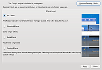
Kubuntu integriert nun auch einen Konfigurationsdialog für Desktop-Effekte mit Compiz. Im Gegensatz zu Ubuntu werden die Effekte standardmäßig nicht aktiviert. Compiz benötigt nur, wer Effekte in KDE 3.5 benutzen will. In KDE 4 werden Desktop Effekte nativ ohne den Einsatz von Compiz unterstützt. Jedoch kann man bei Bedarf auch in KDE 4 Compiz verwenden.
Links¶
Hardy Heron (8.04 LTS):
Hardy Heron
- Eintrag im englischen Ubuntu-Wiki lists.ubuntu.com
- Introducing the Hardy Heron lists.ubuntu.com
- Änderungen Hardy-Ergebnisse
- Englisches Ubuntu-Wiki

- Erstellt mit Inyoka
-
 2004 – 2017 ubuntuusers.de • Einige Rechte vorbehalten
2004 – 2017 ubuntuusers.de • Einige Rechte vorbehalten
Lizenz • Kontakt • Datenschutz • Impressum • Serverstatus -
Serverhousing gespendet von